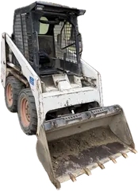
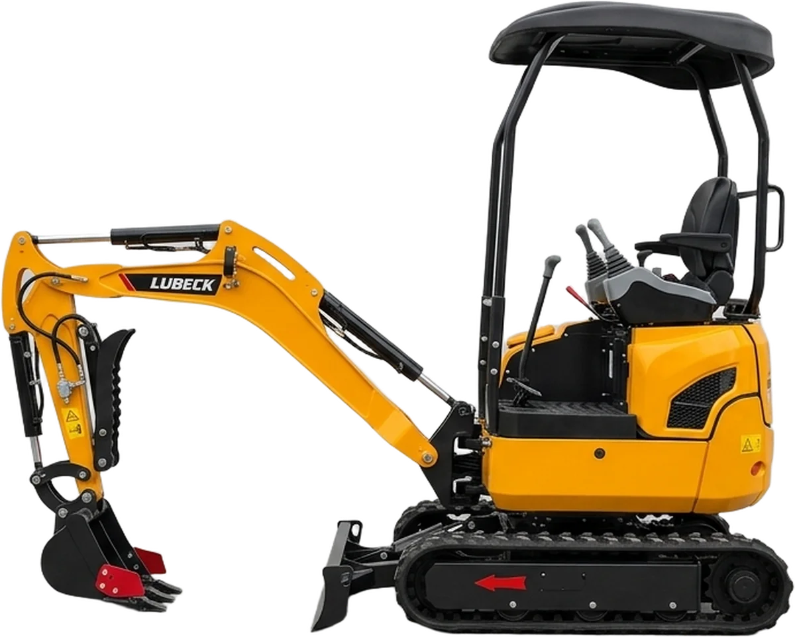
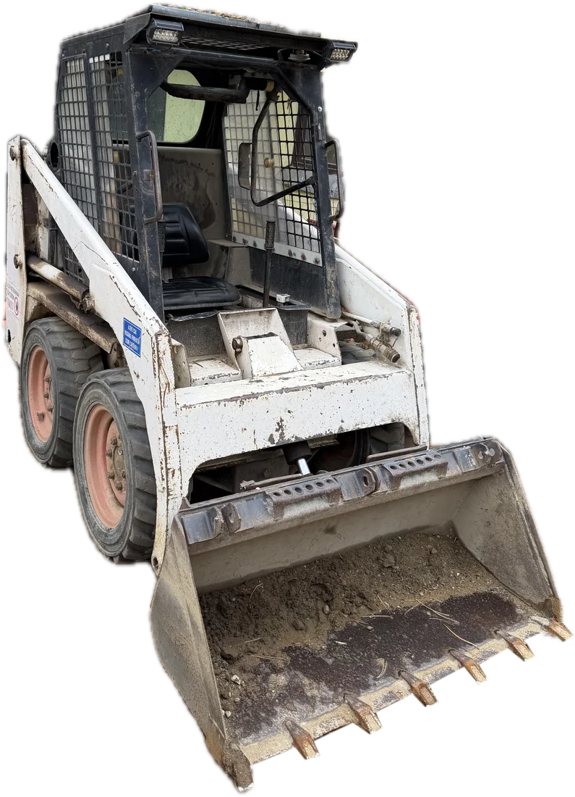

Kicsi gép. 110 cm.
| Szélesség | 110 cm |
|---|---|
| Tömeg | 1,6 t |
| Ásásmélység | 2,2 m |
| Magasság | 2,3 m |
| Gémfordulás | van, fal mellett is ás |
| Derékfájás | 0 g |
| Hólyag | 0 db |
Balassagyarmat

Bobcatet.Minikotró és Bobcat gépkezelővel, Balassagyarmaton és környékén. Földmunka, kerítés, kisebb építőipari munkák.

Töltsd ki a munkalapot, tíz másodperc. Utána hívj, vagy küldd el emailben.
Állj meg.
Ez az árok gyanúsan hosszú.
Kézzel ásnád?
Derék.Hólyag.Vasárnap.
Géppel?
Telefon.Kávé.Kész.
| Szélesség | 110 cm |
|---|---|
| Tömeg | 1,6 t |
| Ásásmélység | 2,2 m |
| Magasság | 2,3 m |
| Gémfordulás | van, fal mellett is ás |
| Derékfájás | 0 g |
| Hólyag | 0 db |

ez nem hiba, ez tapasztalat felrakja, odaviszi| Szélesség | kb. 90 cm |
|---|---|
| Kanál | van |
| Fordulás | helyben |
| Kopás | megvan |
| Talicska | 0 forduló |
Mindkettő gépkezelővel jön. Nem kell megtanulnod.
Fogd a mérőszalagot, és húzd a csúszkát akkorára, amekkora a kapu.
Átfér.
Marad még 40 cm. Hívj, és megyünk.
Hívom: 06 70 856 6191Lemezkerítés. Drótfonat. Táblás. Fa. Mindenféle.
Balassagyarmat. Patvarc. Ipolyvece. Dejtár. Drégelypalánk. Hont. Patak. Érsekvadkert. Szügy. Mohora. Nógrádmarcal. Rétság. Bánk. Tolmács.
Nyugat-Nógrádban nincs kiszállási díj. Nem látod a falut? Hívj, attól még megyünk.